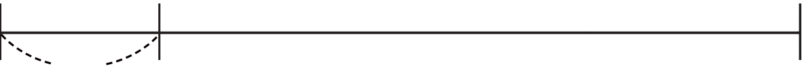

- 문제 1
- 문제 2
- 문제 3
- 문제 4
- 문제 5
- 문제 6
- 문제 7
- 문제 8
-
알맞은 단위를 사용하여 어림한 사람은 누구인지 써 보시오.
우주: 요구르트병에 꽂은 빨대의 길이는 약 17 mm야.
샛별: 막대 과자의 길이는 약 120 mm야.샛별 -
안에 알맞은 단위를 찾아 써넣으시오.
mm cm m km -
집에서 지하철역까지의 거리는 약 1 km입니다. 지하철역에서 박물관까지의 거리는 약 몇 m입니까?
집지하철역박물관1 km약m4000 -
안에 cm와 mm 중 알맞은 단위를 찾아 써넣으시오.
-
지우개의 길이는 약 45입니다.mm
-
어머니의 키는 약 168입니다.cm
-
-
에 주어진 길이를 선택하여 문장을 완성하시오.
1 km 3 mm-
연필심의 길이는 약입니다.3 mm
-
우리집에서 학교까지의 거리는 약입니다.1 km
-
-
에 알맞은 단위를 골라 간단한 문장을 만드시오.
mm cm m km예우리 집에서 소방서까지의 거리는 약 3 km입니다. -
길이가 1 km보다 긴 것을 찾아 기호를 쓰시오.
ㄱ버스의 길이ㄴ백두산의 높이ㄷ4층 건물의 높이ㄹ교실 칠판의 길이ㄴ -
집에서 병원까지의 거리는 약 몇 km인지 구하시오.
 집병원약km3
집병원약km3